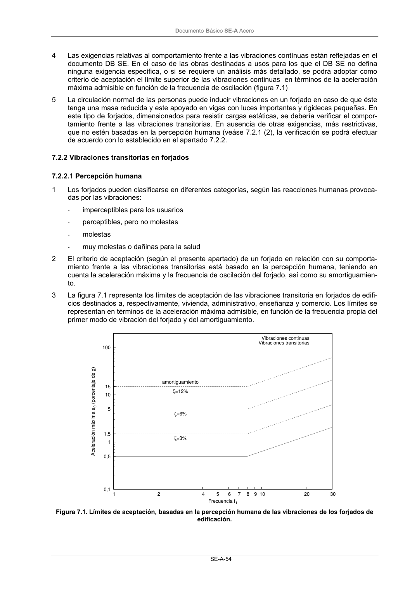

DB-SE-A Acero · edición 2007-10-23 · capa oficial
Documento DB-SE-A-oficial · SHA-256 del PDF 9ed9ea694aabfbda3bfbbef40dfe9223fde05d13c35bc2ba9751e5a96a22a64f
Copia fiel del PDF fuente · Fuente oficial
Ficha de la disposición en la fuente oficial
Formatos: JSON del segmento · Markdown
7.2 Vibraciones 7.2.1 Generalidades 7.2.1 Generalidades 1 Las estructuras en las que las acciones variables puedan inducir vibraciones deberán concebirse de modo que se eviten los posibles fenómenos de resonancia que podrían provocar roturas por fa- tiga o afectar negativamente la resistencia última. 2 En el caso de que una estructura esté sometida a unas acciones periódicas de alternancia rápida, se deberá analizar su comportamiento frente a las vibraciones. Se deberán examinar, en este con- texto, los efectos sobre la aptitud al servicio de la estructura en cuanto a: - el confort de los usuarios del edificio; - el comportamiento de los elementos no estructurales; - el funcionamiento de equipos e instalaciones. 3 En los forjados de edificación se pueden distinguir entre vibraciones de carácter continuo y transito- rio. Vibraciones continuas son las inducidas por el funcionamiento de máquinas con piezas en mo- vimiento o por los movimientos rítmicos de personas al practicar deportes, bailar, etc. DocumentoBásico SE-A Acero SE-A-54 4 Las exigencias relativas al comportamiento frente a las vibraciones contínuas están reflejadas en el documento DB SE. En el caso de las obras destinadas a usos para los que el DB SE no defina ninguna exigencia específica, o si se requiere un análisis más detallado, se podrá adoptar como criterio de aceptación el límite superior de las vibraciones continuas en términos de la aceleración máxima admisible en función de la frecuencia de oscilación (figura 7.1) 5 La circulación normal de las personas puede inducir vibraciones en un forjado en caso de que éste tenga una masa reducida y este apoyado en vigas con luces importantes y rigideces pequeñas. En este tipo de forjados, dimensionados para resistir cargas estáticas, se debería verificar el compor- tamiento frente a las vibraciones transitorias. En ausencia de otras exigencias, más restrictivas, que no estén basadas en la percepción humana (veáse 7.2.1 (2), la verificación se podrá efectuar de acuerdo con lo establecido en el apartado 7.2.2.
